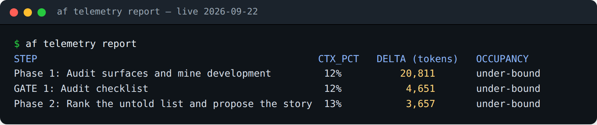
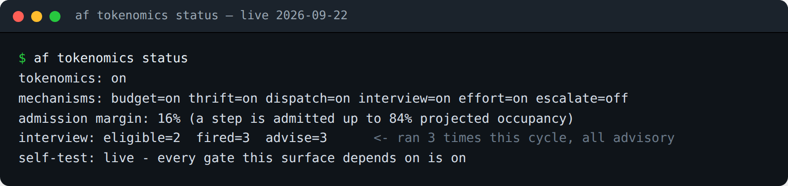
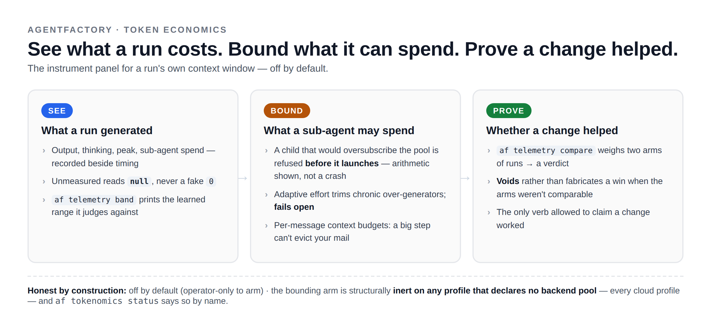

Token economics for autonomous Claude Code agents: see what a run generates, bound what a sub-agent can spend, and prove a change helped. Off by default.
You hand an autonomous agent a context window and walk away. It fills it. Then the questions start. What did that run actually cost? Was that normal for this step? And the formula tweak I shipped last week to make it leaner - did it work, or did I just tell myself it did?
This release answers all three, and it does it with three switches you turn ON when you want the numbers and OFF when you don't. The factory never gets to quietly decide to throttle itself - that call stays yours:
af telemetry on # collect what each run costs
af tokenomics on # spend those numbers - bound a run before it overspends
af improvement on # let a finished agent propose a leaner version of itselfHere is what each one buys a human operator.
af telemetry on - see what a run actually costTurn on telemetry and every closed step writes down what it spent - the real figures, not a guess.
Run af telemetry report and you get a per-step ledger: how much of the context window each step was
holding when it closed, and how many tokens it added. Live output from this repo:

af telemetry report — live from this repo, 2026-09-22.That is the number I never used to have. Not "the run finished" - but "Phase 1 alone added twenty
thousand tokens, and the whole run never crossed 13% of the window." Now I can point at the expensive
step instead of guessing which one it was. And af telemetry usage goes one further: it puts a real
dollar cost on each session, per model, so "what did that cost?" stops being rhetorical.
af tokenomics on - spend those numbers before a run overspendsTelemetry that only reports is a receipt. af tokenomics on puts the numbers to work while the run is
still happening, and it exists for one reason: on a shared or local backend, one greedy sub-agent can
starve the orchestrator that launched it, and you find out only when something crashes halfway through
a workflow.
So it caps that. You set the backend's token pool once (AF_BACKEND_POOL_TOKENS); after that, when an
agent tries to launch a sub-agent that would oversubscribe the pool, the launch is refused BEFORE it
starts - and the agent is handed the arithmetic through the same permission prompt it already
understands, not a mystery stall. On a managed cloud backend, where there's no local pool to blow, it
stays out of your way.
The part you feel over time: adaptive effort reads each step's own history and dials down the effort on steps that have always generated more than they needed - never above the ceiling you set. A workflow you run every week gets cheaper as the factory learns which steps were overspending, and you never touched the formula to make that happen.

af tokenomics status — live from this repo, 2026-09-22.
af telemetry compare - prove the fix worked, or don't claim itThis is the command I reach for after every optimization, because it's the ONLY one in the system allowed to say a change helped. You give it two arms of runs - before your change and after - and it returns a verdict.
The reason I trust it: if the two arms weren't actually comparable - different inputs, mixed conditions - it does not manufacture a win to make me feel good about last week's work. It VOIDS the comparison and tells me why. A tool that would rather say "I can't prove this" than hand me a flattering number is the only kind I'll let near a decision about what to ship. "Did my optimization help?" finally has an answer that isn't me squinting at two runs.
af improvement on - let the run improve itselfThe last switch closes the loop. With the improvement hook on, an agent that finishes a dispatched job proposes an edit to its OWN formula based on what the run just taught it, then hands you a validated verdict by mail - changed or unchanged, passed or FAILED. Nothing lands until you promote it. The factory gets to say "here's how I'd run this leaner next time," and you keep the final say over every line of every formula.
It's on GitHub, Go, AGPL-3.0: github.com/stempeck/agentfactory. Every knob, every default, and the
exact contract for each switch is in USING_TOKENOMICS.md.
Turn on telemetry for one run this week and read the receipt. If you run agents on long workflows, that's the first time "what did that cost, and was my fix real?" has an answer you can point at instead of a shrug.
Learn it, Live it, Share it!